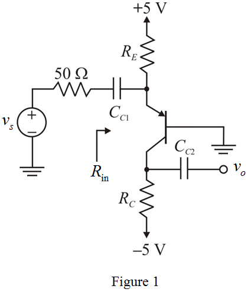

Determine the value of emitter current.
Substitute  for
for  and
and  for
for  in the equation.
in the equation.

Refer to Figure 6.44 (a) in the text book.
The modified circuit diagram is shown in Figure 1.

The input signal source resistance is and the amplifier input resistance is equals to the input signal source resistance.
Condition for the input resistance of the amplifier is,
Determine the value of emitter current.
Substitute for and for in the equation.
Determine the value of emitter resistance.
Apply Kirchhoff’s voltage law to emitter and base loop in Figure 1.
Substitute  for
for  and
and  for
for  in the equation.
in the equation.

Thus, the value of the emitter resistance,  is.
is.
If the emitter-base signal is, the signal at the collector is . Thus, the maximum collector voltage in the positive direction is,
Substitute for
for  ,
,  for
for  and
and  for
for  in the equation.
in the equation.
The voltage , to avoid saturation. Hence, to obtain the maximum gain while allowing an emitter-base signal as large as  and keep the transistor is in the active mode at the same time.
and keep the transistor is in the active mode at the same time.
Thus, the value of collector resistance,  is .
is .
The voltage gain of the amplifier is,
Substitute for ,
,  for
for  ,
,  for
for  ,
,  for
for  and for
and for  in the equation.
in the equation.
Thus, the value of the voltage gain of the amplifier, is.